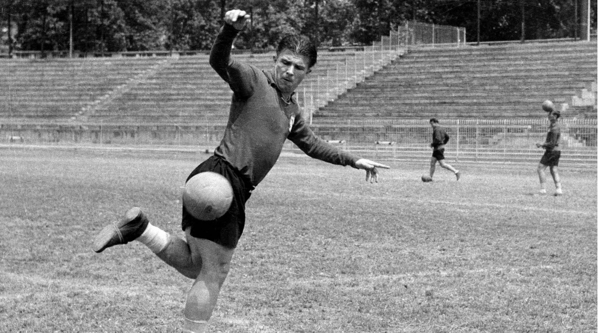

The New York Times
Date:- 15/04/1951
Out in market today
New 1951 Cadillac Series 61 Sedan
The first generation, named Ipsum in Japan and Picnic in export markets, was built from May 1995 until 2001, with export versions arriving in 1996. A commercial version was sold as the Toyota SportsVan in Denmark. It had a choice of two straight-four engines, either a petrol unit displacing 2.0-litres or a 2.2-litre turbo-diesel engine, the 3C-TE. The Ipsum was Toyota's first real success in Japan's then-new "RV" (Recreational Vehicle) market segment. The initial sales target of 10,000 units per month was exceeded by nearly fifty percent in the car's first few months on the market.The second generation was introduced in May 2001 in Japan and also in Europe and Australia (where it was marketed as the Avensis Verso).
The car is known as the Toyota Picnic in some markets, including Singapore and Hong Kong. Apart from Japan, the Ipsum was also available (for Malaysia and Singapore). The commercial "SportsVan" model continued to be available in Denmark; after the Ipsum/Picnic was discontinued Toyota Denmark applied the SportsVan name to a commercial version of the Toyota Verso (R20).
It features an enlarged wheelbase, rear air conditioners and inner room for seven seats. There is also an optional roof rack that provides ability to carry outdoor equipment. The seats can be pushed forward and flat for various configurations.
Engine options included a 2.0-litre 1AZ-FE petrol engine producing 150 PS (110 kW), a 2.4-litre 2AZ-FE petrol engine and a 2.0-litre
Puskas Finished!
another another match in style

1 April 1927 – 17 November 2006) was a Hungarian footballer and manager, widely regarded as one of the greatest players of all time and the sport's first international superstar.[5] A forward and an attacking midfielder, he scored 84 goals in 85 international matches for Hungary and later played four international matches for Spain as well. He became an Olympic champion in 1952 and led his nation to the final of the 1954 World Cup. He won three European Cups (1959, 1960, 1966), ten national championships (five Hungarian and five Spanish Primera División) and eight top individual scoring honors. Known as the "Galloping Major",[6] in 1995, he was recognized as the greatest top division scorer of the 20th century by the IFFHS.[7][8][9] Scoring 806 goals in 793 official games during his career, he is the seventh top goal scorer of all time by the RSSSF.[10]
He was the son of former footballer Ferenc Puskás Senior. Puskás started his career in Hungary playing for Kispest and Budapest Honvéd. He was the top scorer in the Hungarian League on four occasions and in 1948 he was the top goal scorer in Europe. During the 1950s, he was both a prominent member and captain of the Hungary national team, known as the Mighty Magyars. After the Hungarian Revolution, Puskás served a two year ban from UEFA. Despite failing to sign for Ethnikos Piraeus in 1957 under pressure from rival clubs,[11] in 1958, he emigrated to Spain where he successfully signed for Real Madrid at the age of 31. While playing with the club, Puskás won four Pichichis and scored seven goals in two European Cup finals, winning the competition three times with the club and claiming five consecutive La Liga titles. He scored 619 goals in 618 matches in the Hungarian and Spanish leagues and National Cups.
After retiring as a player, he became a coach. The highlight of his coaching career came in 1971 when he guided Panathinaikos to the European Cup final, where they lost 2–0 to Ajax. He also led the club to the championship in 1972, becoming an icon in the country. Afterward he'd have spells at various countries and clubs, including Spain, Paraguay and the Saudi Arabia national team, with varying success. He returned again to Greece to manage an exceptionally strong AEK team for the 1978–79 season. In 1993, he returned to Hungary and took temporary charge of the Hungary national team.[12] In 1998, he became one of the first ever FIFA/SOS Charity ambassadors.[13] In 2002, the Népstadion in Budapest was renamed the Puskás Ferenc Stadion in his honor.
Will Winston Churchill become the new Prime Minister!

Sir Winston Leonard Spencer Churchill[a] KG OM CH TD DL FRS RA (30 November 1874 – 24 January 1965) was a British statesman, military officer, and writer who was Prime Minister of the United Kingdom from 1940 to 1945 (during the Second World War) and again from 1951 to 1955. Apart from 1922 to 1924, he was a member of Parliament (MP) from 1900 to 1964 and represented a total of five constituencies. Ideologically an adherent to economic liberalism and imperialism, he was for most of his career a member of the Conservative Party, which he led from 1940 to 1955. He was a member of the Liberal Party from 1904 to 1924.
Of mixed English and American parentage, Churchill was born in Oxfordshire into the wealthy, aristocratic Spencer family. He joined the British Army in 1895 and saw action in British India, the Mahdist War and the Second Boer War, gaining fame as a war correspondent and writing books about his campaigns. Elected a Conservative MP in 1900, he defected to the Liberals in 1904. In H. H. Asquith's Liberal government, Churchill was president of the Board of Trade and Home Secretary, championing prison reform and workers' social security. As First Lord of the Admiralty during the First World War, he oversaw the Gallipoli campaign, but after it proved a disaster, was demoted to Chancellor of the Duchy of Lancaster. He resigned in November 1915 and joined the Royal Scots Fusiliers on the Western Front for six months. In 1917, he returned to government under David Lloyd George and served successively as Minister of Munitions, Secretary of State for War, Secretary of State for Air, and Secretary of State for the Colonies, overseeing the Anglo-Irish Treaty and British foreign policy in the Middle East. After two years out of Parliament, he was Chancellor of the Exchequer in Stanley Baldwin's Conservative government, returning sterling in 1925 to the gold standard, depressing the UK economy.
New Murder in Town
Mystery Junction Directed by Michael McCarthy Written by Michael McCarthy Produced by William H. Williams
Starring Sydney Tafler
Barbara Murray
Patricia Owens
Cinematography Robert LaPresle
Edited by Geoffrey Muller
Music by Hubert Clifford
Color process Black and white
Production
company
Merton Park Studios
Distributed by Anglo-Amalgamated Film Distributors
Release date
September 1951 (United Kingdom)
Running time 65 minutes
Country United Kingdom
Language English
Mystery Junction is a 1951 British mystery crime film directed by Michael McCarthy and starring Sydney Tafler, Barbara Murray and Patricia Owens.[1] The screenplay concerns a writer who narrates a crime story for a fellow passenger on a train journey.
Plot
A middle-aged woman, Miss Owens, recognises her fellow train passenger, mystery writer Larry Gordon, from a photograph on the cover of one of his books she is reading. Telling him she is a big fan of his books, she asks him how he gets his ideas for his stories, so he agrees to tell her.....
Suddenly they hear a scream. They discover that a train door has been opened and snow blown in. Gordon and Miss Owens visit all the passengers in the railway carriage. One of them is Steve Harding, handcuffed to police officer Peterson, who has a gun. Harding is to appear in court the next day, charged with the murder of a young woman. The other passengers are a broker, an engineer, a woman and a young man. All of them, in one way or another, are linked with Harding.
They then discover that the train guard has been assaulted and knocked out by an assailant who took his uniform coat and posed as him. Two female stowaways, actresses out of work and short of money, are found hiding in the guard's van.
With another police officer who was also escorting Harding now missing, it is concluded that the scream they heard likely came from him when he was thrown from the train by an accomplice of Harding's.
All these passengers leave the train at a junction station to join a connecting service, but they find that train has been cancelled because of the snowy conditions. Taking shelter in the station waiting room, the lighting fails and in the darkness officer Peterson is shot and killed, enabling Harding to be released by accomplices and they attempt to make an escape through the snowy darkness, but conditions force them to return. Knowing that the train had been cancelled, other police arrive to provide support to officer Peterson, and the involvement of the other passengers is revealed. A confrontation leads to the shooting of Harding and also the killer of Peterson, who had accidentally shot him in the darkness when trying to shoot Harding.
The scene fades back to Gordon ending his story idea to Miss Owens.